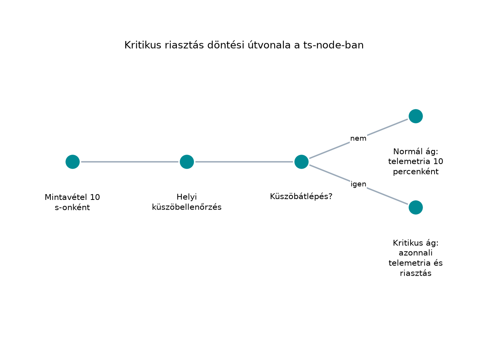

A TerraSense üvegházában először az tűnik a legfontosabbnak, hogy a szenzorok jól mérjék a hőmérsékletet, a páratartalmat és a talajnedvességet. Az első prototípusban a fejlesztő egy Wi-Fi-képes mikrovezérlőt választ, percenként küld JSON-adatot a felhőbe, és minden eszközre ugyanazt a gyári jelszót állítja be. A demó működik, de amikor a termelő 100 csomópontot telepítene, kiderül, hogy az elemeket hetente cserélni kell, a hálózat nem bírja a sok kis üzenetet, és egy nyilvános porton keresztül illetéktelenek is elérik a rendszert.
Ez a fejezet azt tanítja meg, hogyan kerüljük el ezt a helyzetet. Az IoT-rendszerekben a nem funkcionális követelmények (Non-Functional Requirements, NFR) gyakran erősebben korlátozzák a tervezést, mint a funkcionális elvárások. Egy hőmérséklet-mérés önmagában egyszerű, de ha évekig kell elemről működnie, olcsón, nagy darabszámban, megbízhatóan és biztonságosan, akkor minden döntés kompromisszum.
Definíció. A nem funkcionális követelmény az IoT-rendszer olyan minőségi jellemzője vagy korlátja, amely nem egy konkrét funkciót ír le, hanem azt, hogy a rendszer milyen feltételek mellett nyújtja azt. Ide tartozik többek között az energia, a költség, az élettartam, a késleltetés, az adatgyakoriság, a sávszélesség, a megbízhatóság, a rendelkezésre állás, az offline működés, a biztonság és az adatvédelem.
A funkcionális követelmény például az, hogy a ts-node mérje a hőmérsékletet Celsius-fokban. Az NFR pedig az, hogy a mintavétel 10 másodpercenként történjen, a telemetriát 10 percenként, 200 bájtnál kisebb üzenetben, legalább 99,9%-os kézbesítéssel, TLS-titkosított csatornán keresztül küldje, miközben az eszköz két AA elemről legalább 12 hónapig üzemel.
Az IoT-eszközök jelentős része akkumulátorról vagy elemről működik, mert a telepítési helyen nincs kiépített tápegység. Az energiafelhasználást az határozza meg, hogy az eszköz milyen gyakran ébred fel, mennyi ideig aktív a rádió, mekkora a processzor terhelése, és milyen mély alvómódokat használ. Az élettartamot az energiatároló kapacitása és az átlagos áramfelvétel hányadosa adja.
A cél az, hogy az eszköz évekig működjön beavatkozás nélkül, mert a szervizelés (elemcsere, karbantartás) költsége nagy telephelyen jelentős. Az energiatervezés részletes számítását az Energiamodell és az elemélettartam kiszámítása alfejezetben végezzük el.
A szelep energiamodellje. A TerraSense öntözőszelepe bistabil (impulzusvezérelt) szelep: 3,0 V-on 0,5 A-t vesz fel, egy kapcsolási impulzus 50 ms. Egy impulzus energiája J; a tápátalakító 80%-os hatásfokával ez J. A követelmény napi legfeljebb egy nyitás-zárás ciklus, azaz két impulzus, így a szelep napi energiaigénye J, egy évben J. Két AA lítium elem névleges energiája mintegy kJ, ennek a szelep 0,21%-át használja el. A folyamatosan gerjesztett szelep ugyanekkora árammal 1,5 W-ot vesz fel; évi folyamatos működése 47,3 MJ, ami messze meghaladja az elemek kapacitását, és már napi 1 s gerjesztés is 548 J/év, a 12 hónapos cél 1,7%-a. A számok illusztratívak, a tényleges szelep adatlapját és a tápátalakító hatásfokát méréssel kell igazolni. A modellt az Energiamodell és az elemélettartam kiszámítása alfejezetnek is át kell vennie.
A költségnél nem elég a mikrovezérlő árát nézni. A teljes bekerülési költség (Total Cost of Ownership, TCO) magában foglalja az alkatrészeket, a nyomtatott áramkört, a tokozást, a gyártást, a tesztelést, a logisztikát, a telepítést, az üzemeltetést és a karbantartást. Nagy darabszám esetén az egységköltség csökken, de a hibás eszközök cseréjének és a távoli frissítéseknek a költsége nő. Ezért a tervezéskor a darabszámot is rögzíteni kell: teljesen más megoldást választunk 10 prototípushoz, mint 100 000 telepített eszközhöz.
A késleltetés (latency) az az idő, ami a fizikai esemény (például a hőmérséklet küszöb átlépése) és a rendszer válasza (riasztás, szelepnyitás) között eltelik. Az adatgyakoriság azt mondja meg, milyen sűrűn küld az eszköz adatot. A sávszélesség az időegység alatt átvitt adatmennyiség, amelyet az üzenet mérete és a gyakoriság együtt határoz meg.
Három mennyiség szorosan összefügg: ha ritkábban küldünk, kevesebb energiát fogyasztunk és kisebb a sávszélesség-igény, de nő a lehetséges késleltetés. Ha gyors riasztás kell, vagy gyakrabban kell küldeni, vagy az eszköznek helyben kell észlelnie a kritikus állapotot, és csak akkor kell azonnal kommunikálnia.
A megbízhatóság (reliability) azt fejezi ki, hogy a rendszer a kívánt ideig hiba nélkül működik. A rendelkezésre állás (availability) pedig azt, hogy a rendszer milyen arányban elérhető a felhasználó számára. Az IoT-ban a hálózati kapcsolat gyakran megszakad, ezért az eszköznek és a gatewaynek offline módban is működnie kell: az adatokat pufferelni kell, és a kapcsolat helyreállása után vissza kell tölteni. Ezt a mintát részletesen a Store-and-forward: offline működés és visszatöltés alfejezet tárgyalja.
A 99,9%-os üzenetérkezés nem az MQTT QoS 1 szintje, hanem
rendszerszintű, egyedi eseményazonosítókon mért arány. Definíció szerint
30 napos gördülő ablakban a nevező a gateway által a backend felé
kiadott egyedi események száma a
(site, node_id, boot_id, seq) kulcs szerint; a számláló
azoké, amelyek a gateway átvétele után legfeljebb 5 percen belül,
hálózatkiesés esetén a kapcsolat helyreállása után legfeljebb 5 percen
belül tartósan bekerültek a TimescaleDB-be. A duplikált kézbesítés
egyszer számít. A QoS 1 csak a broker és a kliens közötti átvitelt
garantálja, a végpontok közötti tárolást nem, ezért a méréshez a gateway
és a backend egyeztetése szükséges.
Az elvárt hibaforgatókönyvek: broker-újraindítás, backend-újraindítás, hálózati szakadás, eszköz-újraindítás és betelt háttértár. A gateway a visszatöltésig pufferel, a backend idempotens ingestje a kanonikus kulcson deduplikál. A napi egyeztetés a gateway által kiadott eseményszámlálót veti össze a TimescaleDB-ben tárolt egyedi kulcsok számával; a különbség riasztást ad. 30 napnál rövidebb üzem nem ad értékelhető arányt, ezért a 99,9% csak 30 nap után értékelhető.
A biztonság a klasszikus CIA-hármast jelenti: bizalmasság (confidentiality), sértetlenség (integrity) és rendelkezésre állás (availability). Az IoT-eszközök különösen kitettek, mert fizikailag hozzáférhetők, korlátos erőforrásúak, és gyakran hosszú élettartamúak. A biztonsági követelményeket a tervezés elején kell meghatározni, nem utólag hozzáadni.
Az adatvédelem a személyes adatok kezelésére vonatkozó jogi és etikai követelményeket foglalja magában. A GDPR (General Data Protection Regulation) az EU-ban szabályozza a személyes adatok gyűjtését, tárolását, felhasználását és törlését. Egy üvegház hőmérséklet-adata önmagában nem személyes adat, de ha az adatbázisban összekapcsoljuk a telepítő nevével, telefonszámával vagy a termelő cégével, akkor már személyes adatnak minősülhet. Ezért a tervezéskor adatleltárt kell készíteni, és minimalizálni kell a gyűjtött adatokat.
A szabályozási környezet gyorsan változik. Az ETSI EN 303 645 szabvány alapvető biztonsági követelményeket fogalmaz meg fogyasztói IoT-eszközökre: például nem lehet gyári alapértelmezett jelszó, biztosítani kell a szoftverfrissítést és a sebezhetőségek bejelentését. Az EU Cyber Resilience Act (CRA) a digitális termékekre ír elő horizontális biztonsági követelményeket; a konkrét határidőket és alkalmazási köröket mindig ellenőrizni kell a hatályos jogszabályban.
Két biztonsági profil. A laborok helyi, elkülönített oktatási profilban indulnak: a broker és a backend csak a loopback interfészen érhető el, és a példák a lépések megértéséhez HTTP-t és névtelen MQTT-t használhatnak. Ez a profil kizárólag a helyi gépen, elkülönített laborhálózaton elfogadható, és nem része a kiadásra szánt rendszernek. A záróprofil és az átvételi teszt kötelező követelménye a TLS 1.3, az mTLS eszközönkénti tanúsítvánnyal, valamint a REST API hitelesítése és jogosultsághoz kötése: a hitelesítés nélküli REST-hívás 401 vagy 403 választ kap, a tanúsítvány nélküli MQTT-kapcsolatot a broker elutasítja. A két profil közötti átmenet a biztonsági fejezetekben lépésenként történik, és a záróprojekt csak a záróprofilban fogadható el.
Az NFR-ek között gyakoriak az ütközések. A döntést mindig a konkrét alkalmazás kontextusában kell meghozni, és a kompromisszumot explicit módon rögzíteni kell a követelménytáblázatban.
| Ütközés | Jellemző hiba | Feloldási irány |
|---|---|---|
| Energia vs. adatgyakoriság | Túl gyakori küldés, gyors elemlemerülés | Csak a szükséges adatot küldeni, helyi előfeldolgozás, adaptív gyakoriság |
| Költség vs. biztonság | Olcsó hardver, gyenge vagy hiányzó titkosítás | Hardveres kriptográfiai gyorsító, minimális biztonsági szint előírása |
| Megbízhatóság vs. költség | Redundancia mellőzése, egyetlen meghibásodási pont | Csak a kritikus útvonalon redundancia, olcsó tartalék (pufferelés) |
| Késleltetés vs. energia | Gyors válaszhoz folyamatos rádiókapcsolat | Helyi eseménydetektálás, csak rendkívüli eseménykor azonnali küldés |
| Darabszám vs. egyedi konfiguráció | Minden eszközt kézzel konfigurálnak | Automatikus provisioning, tanúsítvány-alapú identitás |
A TerraSense esetében a legfontosabb ütközés az energia és a késleltetés között van. A termelőnek gyorsan kell tudnia, ha az üvegházban fagypont közelébe esik a hőmérséklet, de a folyamatos adatküldés lemerítené az elemeket. A feloldás az, hogy a ts-node helyben, 10 másodpercenként mintát vesz, a normál telemetriát 10 percenként küldi, és csak akkor küld azonnali üzenetet, ha a mért érték átlép egy kritikus küszöböt. A három periódus tehát külön követelmény: a mintavételi periódus 10 s, a normál küldési periódus 10 perc, a kritikus esemény késleltetése pedig a küszöbátlépés észlelésétől számítandó. A helyi vezérlési hurok (például a szelep működtetése) 1 s periódussal fut, és nem függ a felhő elérhetőségétől. Normál üzemben tehát ritka a rádiós kommunikáció, rendkívüli eseménykor viszont azonnali.
A 30 másodperces riasztási követelmény a fizikai esemény (a küszöb átlépésének) pillanatától a dashboardon való megjelenésig értendő, nem a kész minta továbbításától. A legrosszabb esetben az esemény a mintavételi periódus végén következik be, ezért a 10 s mintavételi periódus is a késleltetés része. A tervezett késleltetési büdzsé:
| Szakasz | Tervezett felső korlát |
|---|---|
| Mintavételi periódus (legrosszabb fázis) | 10 s |
| Helyi küszöbészlelés és döntés | 1 s |
| MQTT publish a gatewayen és a brokeren át | 2 s |
| Backend feldolgozás és tárolás | 1 s |
| Dashboard frissítés | 1 s |
| Összesen | legfeljebb 15 s, a 30 s-os követelményen belül |
A felső korlátok tervezési célok, nem mért értékek; a tényleges késleltetést a kiadás előtti integrációs teszt méri. A teszt a mintavételi periódus legrosszabb fázisában idézi elő a küszöbátlépést, és a teljes láncot méri, beleértve az energiamérleget is.
Állítsuk össze a TerraSense nem funkcionális követelménytáblázatát. A sablon oszlopai:
A táblázatot ne dokumentációként kezeljük, hanem élő tervezési eszközként: ha egy későbbi alfejezetben döntés változik, a táblázatot is frissíteni kell.
| Kategória | Követelmény | Mérhető célérték | Ellenőrzés módja | Prioritás |
|---|---|---|---|---|
| Energia, élettartam | A ts-node valós hardveren 2 db AA lítium elemről legalább 12 hónapig üzemel | 10 s mintavétel, 10 percenkénti telemetria, napi legfeljebb 1 nyitás-zárás ciklus (2 impulzus), átlagos áramfelvétel alapján | Energiabüdzsé-számítás a 2.2 szelepmodelljével (Energiamodell és az elemélettartam kiszámítása) és laboratóriumi teszt | Must |
| Költség | A ts-node anyagköltsége tömeggyártás esetén 60 EUR alatt marad | BOM-költség 1000 darabnál | Beszerzési árajánlat, gyártási elemzés | Should |
| Adatgyakoriság | Mintavételi periódus 10 s, normál telemetriai küldési periódus 10 perc | Konfigurálható időzítők | Konfiguráció-ellenőrzés, naplóelemzés | Should |
| Sávszélesség | Egy telemetriai üzenet CBOR-kódolással legfeljebb 200 B | Üzenet-séma, kódolási teszt | Unit teszt, protokoll-validálás | Should |
| Késleltetés | Kritikus riasztás a fizikai eseménytől (a küszöb átlépésétől) a dashboardon való megjelenésig legfeljebb 30 s | 10 s mintavétel + helyi küszöbészlelés + azonnali MQTT publish | Integrációs teszt a mintavételi periódus legrosszabb fázisában, szimulált hálózattal | Must |
| Megbízhatóság | A gateway-ből a backendbe legalább 99,9% üzenetérkezés 30 napos gördülő ablakban; a késés a gateway átvétele után (kiesésnél a helyreállás után) legfeljebb 5 perc | Egyedi (site, node_id, boot_id, seq) kulcsok, MQTT QoS
1, idempotens ingest, újraküldés |
Eseményazonosítós egyeztetés broker- és backend-újraindítás után, hosszú távú megfigyelés | Must |
| Offline működés | A ts-gw legalább 7 nap telemetriát pufferel hálózatkiesés esetén | Helyi tároló kapacitása, visszatöltési logika | Szimulált hálózatkiesés, visszatöltési teszt | Must |
| Biztonság | A záróprofilban minden MQTT- és REST-kapcsolat TLS 1.3/mTLS, eszközönként egyedi tanúsítvánnyal; a REST-hitelesítés hiánya 401/403 | Nincs jelszó-alapú azonosítás, tanúsítvány-validálás, jogosultság-ellenőrzés | Biztonsági teszt: tanúsítvány nélküli MQTT és hitelesítés nélküli REST elutasítása | Must |
| Adatvédelem | Csak az üzemeltetéshez szükséges adatokat gyűjtjük, és biztosított a törlés | Adatleltár, hozzáférés-kezelés, törlési eljárás | GDPR-megfelelőségi audit | Should |
| Szabályozás | Az ETSI EN 303 645 alapelvei és a CRA vonatkozó követelményei teljesülnek | Nincs alapértelmezett jelszó, frissítési mechanizmus, sebezhetőség-kezelés | Megfelelőségi ellenőrzés | Must |
A táblázatban több célérték tudatosan konzervatív, mert a
native_sim környezet nem helyettesíti a valós hardveres
mérést. A valós hardverre vonatkozó energia- és késleltetés-adatokat a
későbbi alfejezetekben vagy valós méréssel, vagy forrással jelölt
becsléssel igazoljuk.
A kritikus riasztás folyamatát a következő ábra szemlélteti:

A folyamat lépései: a ts-node 10 másodpercenként felébred, kiolvassa a szenzorokat, és a mért értékeket összehasonlítja a helyben tárolt küszöbértékekkel. Ha minden érték a normál tartományban van, az eszköz visszaalszik, és csak a 10 perces küldési periódus lejártakor küld telemetriát. Ha bármelyik érték átlépi a kritikus határt, a csomópont azonnal felépíti az MQTT-kapcsolatot, és elküldi a riasztási telemetriát. A két ág közül tehát mindig csak az egyik fut le; a normál ág ritka rádiós forgalmat, a kritikus ág azonnali értesítést ad. Ezzel a normál üzemben alacsony az energiafogyasztás, rendkívüli eseménykor viszont rövid a késleltetés. A döntési pontot és a két ágat a fenti ábra külön mutatja.
Továbbvitt eredmény. A TerraSense
követelménytáblázatát a
~/iot-labor/i002/terrasense-requirements.md fájlban
rögzítettük. Ezt a táblázatot használja az A
TerraSense mintarendszer architektúrája alfejezet az architekturális
döntésekhez, az Energiamodell és az elemélettartam
kiszámítása alfejezet az energiabüdzsé számításához, a Rádiós technológiák összevetése: hatótáv, energia,
sávszélesség, költség alfejezet a rádióválasztáshoz, és a Fenyegetésmodellezés: támadási felület és STRIDE
alfejezet a biztonsági követelmények lebontásához.
A nem funkcionális követelmények teljesülését csak akkor tudjuk igazolni, ha minden sornál előre meghatároztuk az ellenőrzés módját. Az ellenőrzési terv a következőket tartalmazza:
| Követelmény | Ellenőrzési eszköz, módszer | Mikor |
|---|---|---|
| Élettartam | Energiabecslés a szelepmodell figyelembevételével, majd valós hardveres árammérés | Tervezéskor és prototípus-tesztkor |
| Költség | BOM-árajánlat, gyártási költségkalkuláció | Beszerzés előtt |
| Késleltetés | Integrációs teszt a mintavételi periódus legrosszabb fázisában, időbélyeg-napló | Minden kiadás előtt |
| Megbízhatóság | Egyedi eseményazonosítós egyeztetés broker- és backend-újraindítás után, üzenetszámláló, nyugták | Folyamatosan |
| Offline | Hálózatkiesés szimulálása, visszatöltés ellenőrzése | Integrációs tesztben |
| Biztonság | Fenyegetésmodell, TLS-validálás, tanúsítvány nélküli MQTT és hitelesítés nélküli REST elutasítása | Tervezéskor és auditkor |
A hibakeresés során gyakori, hogy egy követelmény nem mérhető, vagy a teszt nem reprodukálható. Ilyenkor először a mérőszámot kell pontosítani, nem a tesztet erőltetni.
| Tünet | Lehetséges ok | Javítás |
|---|---|---|
| Az eszköz eleme a tervezettnél hamarabb lemerül | A rádió túl sokat ad, az alvómód nem lép be | Energiaprofil mérése, alvási időzítők ellenőrzése |
| A riasztás késve érkezik | A küszöbellenőrzés nem helyben fut, vagy a mintavételi periódus túl hosszú | Helyi küszöbellenőrzés és 10 s mintavétel bevezetése |
| A biztonsági teszt elutasítja a kapcsolatot | A tanúsítvány lejárt, vagy a CA nem megbízható | Tanúsítvány-életciklus és CA-lánc ellenőrzése |
| Offline tesztben adatvesztés | A puffer mérete kicsi, vagy a visszatöltés sorrendje hibás | Pufferméret növelése, sorrend és idempotencia javítása |
A fejlesztő a funkcionális prototípus után foglalkozik csak az NFR-ekkel. A TerraSense-wi-fi prototípus működik, de a gyártás előtt kiderül, hogy az energia- vagy biztonsági követelmény nem teljesíthető a választott hardverrel. Az NFR-eket a követelménytáblázatban már a tervezés elején rögzíteni kell, mert ezek határozzák meg a hardver- és protokollválasztást.
Az energia- és a késleltetés-követelményt egymástól függetlenül kezelik. Ha gyors riasztást akarunk, gyakori mintavételt és adatküldést választunk, és az elem gyorsan lemerül. A megoldás a helyi feldolgozás: az eszköz sűrűn mintavételez, de normál üzemben ritkán kommunikál, rendkívüli eseménykor viszont azonnal.
A biztonságot utólag „hozzáteszik”. Ha a tanúsítvány-kezelést, az mTLS-t és az OTA-frissítést nem tervezik be az induláskor, később drága átalakításra van szükség, vagy a termék sebezhető marad.
Soroljon fel három, az IoT-ban gyakori nem funkcionális követelményt, és magyarázza el, miért fontosabbak ezek egy telephelyi szenzorhálózatban, mint egy asztali webalkalmazásban.
Egy TerraSense ts-node normál üzemben 10 percenként küld egy 180 B méretű telemetriai üzenetet. Hány bájt adatot küld naponta? Hány KiB ez 1000-es alapú átváltással? Ha egy hónap 30 nap, mennyi a havi adatmennyiség node-onként?
A TerraSense követelménytáblázatához adjon egy új sort:
„Firmware-frissítés időtartama”. A mérhető célérték legyen az, hogy egy
ts-node OTA-frissítése sikeresen befejeződik 5 perc alatt, és
meghibásodás esetén az előző firmware visszaáll. Határozza meg az
ellenőrzés módját és a prioritást. Mentse el a táblázatot a
~/iot-labor/i002/terrasense-requirements.md fájlba.
A TerraSense üvegházában a termelő azt tapasztalja, hogy a riasztások gyakran 10 percet késnek. A rendszer jelenleg 10 percenként vesz mintát, és ugyanilyen ütemben küld minden adatot a felhőbe, ahol a backend ellenőrzi a küszöbértékeket. Javasoljon egy olyan módosítást, amely a fizikai eseménytől számítva 30 másodpercen belüli riasztást tesz lehetővé, és mutassa meg, hogyan tartható az energia-büdzsé. Indokolja, hogyan befolyásolja ez a ts-node, a ts-gw és a ts-backend közötti munkamegosztást.
Három tipikus NFR:
Napi küldések száma:
.
Napi adatmennyiség:
B.
Ez kB-ban (1000-es osztóval):
kB/nap.
Havi adatmennyiség 30 nappal:
B
kB, azaz körülbelül 0,78 MB.
Ez az érték csak a telemetriai payload; a protokoll-fejlécek (MQTT, TLS, IP) további bájtokat adnak hozzá, ezért a tényleges forgalom nagyobb.
Az új sor a táblázatban:
| Kategória | Követelmény | Mérhető célérték | Ellenőrzés módja | Prioritás |
|---|---|---|---|---|
| Eszközmenedzsment | A ts-node OTA-frissítése sikeresen befejeződik 5 perc alatt, hiba esetén az előző firmware visszaáll | Frissítési idő < 5 perc, rollback automatikus | OTA-teszt szimulált frissítéssel és megszakított átvitellel | Should |
A frissítési mechanizmust a későbbi OTA-frissítés: A/B képek, rollback, delta, fokozatos kiadás alfejezetben tervezzük meg.
A megoldás az, hogy a küszöbellenőrzést a ts-node-ba helyezzük, és szétválasztjuk a periódusokat: az eszköz 10 másodpercenként vesz mintát, a normál telemetriát 10 percenként küldi, kritikus küszöbátlépéskor pedig azonnal üzenetet küld. A 30 másodperces követelmény így a fizikai eseménytől számítható: a legrosszabb esetben 10 s a mintavételi periódus, ehhez legfeljebb néhány másodperc helyi feldolgozás és hálózati út járul. A sűrűbb mintavétel növeli a helyi ébredések energiaigényét, ezért a megoldás csak akkor tartható, ha a szenzorolvasás és a helyi döntés alacsony energiájú, a rádiós küldés pedig továbbra is ritka; az energiamérleget a 7. fejezet számításával kell igazolni. A ts-gw változatlanul továbbítja az MQTT-üzeneteket, a ts-backend pedig a riasztási üzenetre azonnal értesítést generál. Ez a munkamegosztás kihasználja az eszköz helyi számítási kapacitását, és csökkenti a felhő felé irányuló forgalmat.
A nem funkcionális követelmények (energia, élettartam, költség,
darabszám, késleltetés, adatgyakoriság, sávszélesség, megbízhatóság,
offline működés, biztonság, adatvédelem, szabályozás) határozzák meg,
hogyan működik egy IoT-rendszer a valós fizikai világban. A tervezés
során ezeket mérhető célértékekkel, ellenőrzési móddal és prioritással
rögzítjük. A TerraSense követelménytáblázata a
~/iot-labor/i002/terrasense-requirements.md fájlban
található; fő döntései: 10 s mintavételi periódus, 10 perces küldési
periódus, helyi küszöbészlelés kritikus riasztáshoz, legalább 12 hónapos
elem-élettartam a bistabil szelep energiaigényével együtt, 200 B-nál
kisebb CBOR-üzenet, 30 napos gördülő ablakban mért 99,9%-os
üzenetérkezés, 7 nap gateway-puffer, a záróprofilban TLS 1.3/mTLS és
ETSI EN 303 645/CRA-megfelelés. Ezt a táblázatot használja az A TerraSense mintarendszer architektúrája, az Energiamodell és az elemélettartam kiszámítása, a
Rádiós technológiák összevetése és a Fenyegetésmodellezés.